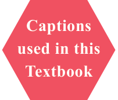

GOVERNMENT OF TAMILNADU
STANDARD NINE
MATHEMATICS
A publication under Free Textbook Programme of Government of Tamil Nadu
Department Of School Education
Untouchability is Inhuman and a Crime
Government of TamilNadu
First Edition \(- 2018\) Revised Edition - 2019, 2020, 2022, 2023, 2025
Reprint \(- 2021\), 2024 (Published under new syllabus)
A call can change your life helplines
NOT FOR SALE Harassed or Abused,

Content Creation Abused or Harassed - Emotionally, Physically or Sexually,
possess all If you need guidance for
The wise
State Council of Educational Research and Training Dial1441714417
© SCERT 2018
Printing & Publishing
Tamil NaduTextbook and Educational Services Corporation



எண்்ணணென்்ப ஏனை எழுத்்ததென்்ப இவ்விரண்டும் கண்்ணணென்்ப வாழும் உயிர்க்கு - குறள் 392 Numbers and letters, they are known as eyes to humans, they are. Kural 392
Learning Outcomes
To transform the classroom processes into learning centric with a set of bench marks
Note
To provide additional inputs for students in the content
Activity / Project
To encourage students to involve in activities to learn mathematics
ICT Corner
To encourage learner's understanding of content through application of technology
Thinking Corner
To kindle the inquisitiveness of students in learning mathematics. To make the students to have a diverse thinking
Points to Remember
To recall the points learnt in the topic
Multiple Choice Questions
To provide additional assessment items on the content
Progress Check
Self evaluation of the learner's progress
Exercise
To evaluate the learners' in understanding the content
"The essence of mathematics is not to make simple things complicated but to make complicated things simple" -S. Gudder
SYMBOLS
= is equal to _{ly} ||| similarly
! is not equal to T symmetric difference 1 less than N natural numbers # less than or equal to W whole numbers 2 greater than Z integers $ greater than or equal to R real numbers . equivalent to 3 triangle) union + angle k intersection = perpendicular to U universal Set || parallel to d belongs to ( implies z does not belong to ( therefore 1 proper subset of a since (or) because 3 subset of or is contained in absolute value Y1 not a proper subset of - approximately equal to M not a subset of or is not contained in | (or) : such that
Al (or) A complement of \(A /\) (or) , congruent Q (or) { } empty set or null set or void set / identically equal to n(A) number of elements in the set A p pi
P(A) power set of A ! plus or minus \sum summation P(E) probability of an event E
E-book Evaluation